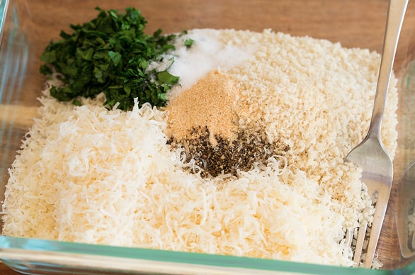
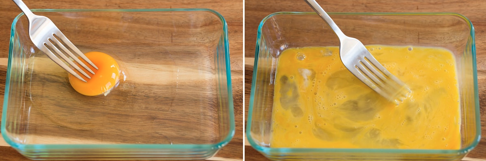
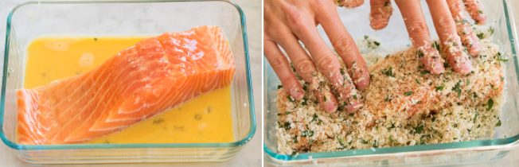
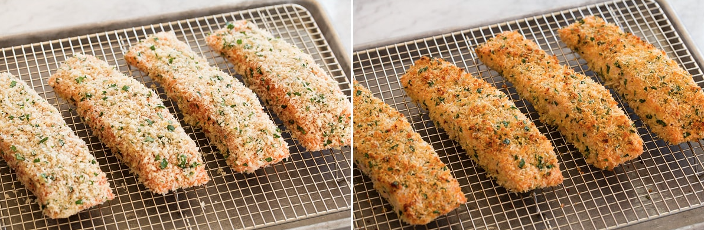

Preheat oven to 425 degrees. Spray an oven safe wire cooling rack with non-stick cooking spray and set over a rimmed baking sheet.
In a shallow dish toss together panko, parmesan, parsley, garlic powder, salt and pepper (I use about 3/4 tsp salt and 1/2 tsp pepper). Drizzle in olive oil and toss well to evenly coat mixture.
In a separate shallow dish beat the egg until yolk and white are well blended.
Working with one piece of salmon at a time dredge each side in egg then transfer to panko mixture and cover and press both sides with panko mixture (also sprinkle bread crumbs over top and press to help stick).
Transfer to prepared wire rack on baking sheet. Repeat process with remaining 3 portions. Add extra bread crumbs to tops if there is extra left and press to an even layer.
